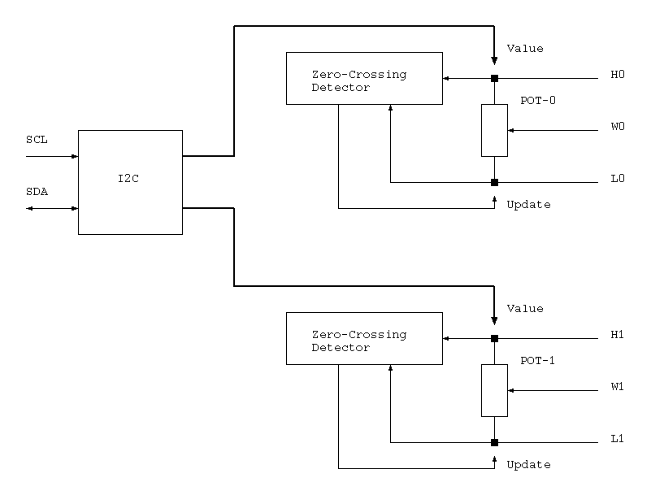
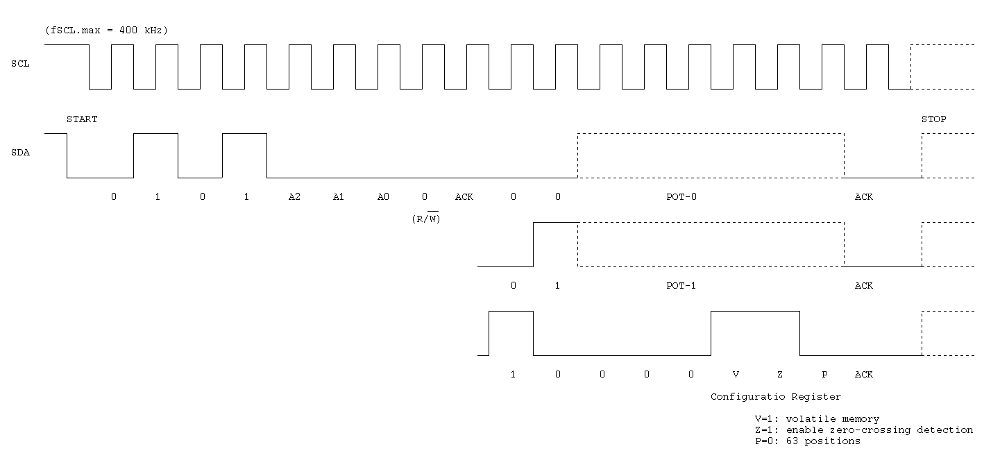

<!-- header -->

<h1>Dallas/Maxim DS1881</h1>

<p>The DS1881 is a dual audio taper digital potentiometer. 
It has an I2C interface.</p>

<p></p>

<p></p>

<!-- layout -->
	
<section>
	<h2>I2C interface</h2>
	
	<p></p>
</section>

<!-- footer -->

